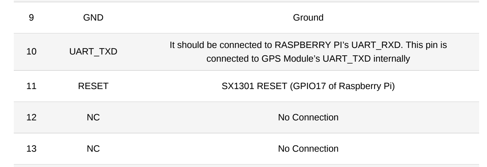

Late of autumn 2024, year of the dragon, company off-site. While
scratching our heads to get an idea to implement during a
hackathon, a colleague of mine introduced me to the world of
LoRa and LoRaWAN.
So what is this about? IoT devices need a way to exchange information, by forming a *local* network.
In our daily lives, we use Wi-Fi to connect our devices in our LAN.
This is expensive, both in terms of energy and computation power.
LoRaWAN networks like The Things Network, solve this issue using LoRa.
For those new to IoT you might find these terms confusing, like I did. To save you some clicks:
LoRa is the radio signal that carries the data - i.e. a physical layer.
LoRaWAN is the communication protocol that defines how that data
is sent across the network - i.e. a transport layer.
The idea was simple, yet fresh: make a PoC (proof of concept) to prove that it's possible
to make blockchain transactions over a LoRaWAN network.
The solution would consist of two steps:
Setup a simple LoRaWAN network with an end-node and gateway.
Create a flow of creating, signing and executing a transaction to the blockchain.
We got so excited that my jet lag vanished, but Murphy's law
did us dirty: "Anything that can go wrong will go wrong."
We ordered the equipment and waited for it to be delivered.
And we waited... We waited... until no time remained, so we
dropped the idea and continued working on something else.
The so-anticipated hardware arrived the last day of the hackathon,
which was obviously too late. We decided to get the equipment back to our
home-offices and start working on it when our capacity allowed it.
The offsite ended, I returned to Athens, and got back to my projects at the time which demanded a lot of our time
and there was no space for any experimentation.
I still had an itch though. Something that revolved around my mind and I would constantly get back to when
daydreaming about project ideas.
What if I made the first steps of the implementation?
I had a hard time seeing all those goodies just laying around
on the shelf. So I decided to give it a go.
How hard could it be? I just wanted to set up a single-node network plus send
the hex encoded bytecode of a transaction. "Piece of cake!". "Low hanging fruit!"
And other deceptions. Turns out that I would be thrown for a loop!
Equipment
Let's start from the equipment: I was supplied with
Some other peripherals like TX/TR and GPS antennas.
The RAK2245 HAT could be added on top of a Raspberry Pi 4b to create the gateway.
Then, to create an end node I could either setup it up using the feather-RFM95 (standalone) or
attach the RFM95W bonnet on top of a raspberry pi to create another one.
The RFM95W bonnet could not fit on top of a Raspberrypi 4b because the headers of the board
would mismatch the board. So I had to order an additional Raspberrypi zero wh as shown in the
adafruit's setup guide.
And the LoRaWAN Odyssey begins!
Gateway setup
To test if a network works, you first need to start from the receiver.
In my case, I would first need to set up the LoRaWAN gateway.
If the gateway would work as expected, i.e. show up in The Things Network console and reply to status messages,
then that would enable me to check if the end nodes work too.
The first step was to assemble the gateway parts. Got one Raspberry Pi 4B and attached on top of it
the RAK2245 HAT. Connected the antennae both for signal accumulation and gps and that was it.
Then for the software part, I would have to follow the official
quickstart guide of RakWireless. The steps would be to install a headless Raspbian OS
to the Raspberry Pi, then ssh into it and install the RAK2245 HAT's software by cloning the
repo and running the install script.
So far so good, or so I thought! Having followed the instruction steps, the gateway doesn't show up
in the TTN console.
Time for some troubleshooting.
I open up the good old journalctl and inspect my ttn-gateway service:
$ sudo journalctl -u ttn-gateway
rak-gateway ttn-gateway[2890]: WARNING: [main] impossible to open /dev/ttyAMA0 for GPS sync (check permissions)
(...)
rak-gateway ttn-gateway[2890]: ERROR: [main] failed to start the concentrator
Seems that the concentrator was not able to start due to a serial line error.
Pause. To understand what needs to be checked next, I would
have to find where the pins are defined in the rak's repo.
Searching into the files I found out that this is done inside the
/opt/ttn-gateway/packet_forwarder/lora_pkt_fwd/start.sh Let's dive deeper:
# Stop the automatic start of the service.
sudo systemctl stop ttn-gateway.service
# Check out the output of the packet forwarder
sudo bash -x /opt/ttn-gateway/packet_forwarder/lora_pkt_fwd/start.sh
+ SX1301_RESET_BCM_PIN=22
+ echo 22
start.sh: line 6: echo: write error: Invalid argument
+ echo out
start.sh: line 7: /sys/class/gpio/gpio22/direction: No such file or directory
+ echo 0
start.sh: line 8: /sys/class/gpio/gpio22/value: No such file or directory
+ sleep 0.1
+ echo 1
start.sh: line 10: /sys/class/gpio/gpio22/value: No such file or directory
+ sleep 0.1
+ echo 0
start.sh: line 12: /sys/class/gpio/gpio22/value: No such file or directory
+ sleep 0.1
+ echo 22
start.sh: line 14: echo: write error: Invalid argument
+ ./set_eui.sh
+ sleep 0.2
+ sleep 0.5
+ ./lora_pkt_fwd
*** Beacon Packet Forwarder for Lora Gateway ***
Version: 4.0.1
*** Lora concentrator HAL library version info ***
Version: 5.0.1;
***
So the culript to the problem seems to be the that the GPIO reset
pin is set to 22 incorrectly, leading to a misalignment between the two boards.
To find the correct value of the Raspberry Pi's GPIO pin, I would need to check the
official
documentation for RAK2245. Looking at page 5, the GPIO pin of Raspberry Pi that should be used is GPIO 17:

Screenshot from RAK2245's documentation, page 5.
The fix is simple! Just change the value inside /opt/ttn-gateway/packet_forwarder/lora_pkt_fwd/start.sh
to SX1301_RESET_BCM_PIN=17.
Updated the files, rebooted, logged in the TTN console and... no GPS signal!
That was an easy fix though. The output from journalctl indicated that there was no such
/dev/ttyAMA0, which I confirmed it using ls /dev/.
Repeating the gateway-config process, I saw that
there was a file being edited called global_conf.json.
When I switched the value from /dev/ttyAMA0 to /dev/serial0, which actually
existed in my machine, it worked.
End node setup
The gateway was up and running, so it was time to set up the end node.
Starting from the adafruit RFM95W bonnet, I connected it to a Raspberry Pi Zero WH.
H stands for header, which means that the board comes with the GPIO pins already
soldered, minimizing the risk to damage my boards with my
inexperienced hands.
Next step was to make sure that the bonnet was recognized by the Raspberry Pi.
This was done by following the adafruit's setup instructions
which comprised of installing CircuitPython Libraries and testing the connectivity
(not its' capability to transmit) of the bonnet with a `rfm9x_check.py` script,
in combination with installing blinka.
It worked fine (so far!), with the OLED being lit up and displaying
the "Ada", "Fruit", and "Radio" for each button pressed respectively.
Time to transmit some data - or not?
Looks like adafruit's library is not compatible with the TTN's v3 stack anymore.
Bummer.
Before reaching a deadend, my first approach was to look into GitHub and discover
if there are some open-source libraries from independent programmers that could help me out.
In my search for salvation, I found BNNorman/CircuitPython-LoRaWAN
which was made for microcontrollers which run Circuit Python.
My raspberry pi zero can’t run circuit python, it's a single board computer - not a microcontroller.
As an alternative I used the `adafruit blinka` library which provides an API to other
hardware such as single board computers. But this API was very limited and deprecated, resulting to errors.
I tried to migrate the library to the best of my abilities, but I was not able to make it work.
The changes I had to make were too many, making hard to not introduce errors.
At this point I had one board left in my disposal: an adafruit feather RFM9x m0.
This is a microcontroller, but can’t run circuit python - it would be convenient because I could use the CircuitPython-LoRaWAN codebase from approach 1.
...